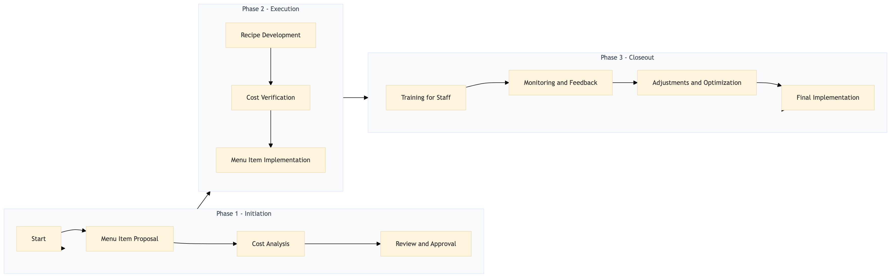

| Role | Steps |
|---|---|
| Executive Chef | 1.1 1.3 3.1 3.3 3.4 |
| Culinary Manager | 1.2 2.2 3.2 |
| Sous Chef | 2.1 |
| Kitchen Manager | 3.4 |
| Step | Name | Role | System | Input | Output | KPI | Dec? | Exc? | Pain Point / Risk |
|---|---|---|---|---|---|---|---|---|---|
| 1.1 | Menu Item Proposal | Executive Chef | Oracle OPERA Cloud | New menu item proposal with concept and initial cost estimate | Proposed menu item details in Oracle OPERA Cloud | Less than 1 hour to input data | Y | N | Accurate costing of ingredients |
| 1.2 | Cost Analysis | Culinary Manager | Oracle OPERA Cloud, Birchstreet Procurement | Proposed menu item details from Oracle OPERA Cloud | Detailed cost analysis report | Less than 2 hours to complete analysis | N | Y | Ingredient price volatility |
| 1.3 | Review and Approval | Executive Chef | Oracle OPERA Cloud | Detailed cost analysis report | Approved menu item with final costs | Less than 1 hour to review and approve | Y | N | Budget constraints |
| 2.1 | Recipe Development | Sous Chef | Oracle OPERA Cloud, Microsoft Power BI | Approved menu item with final costs | Developed recipe with ingredient quantities and preparation methods | Less than 4 hours to develop recipe | N | Y | Ingredient availability |
| 2.2 | Cost Verification | Culinary Manager | Oracle OPERA Cloud, Birchstreet Procurement | Developed recipe with ingredient quantities and preparation methods | Verified cost report | Less than 2 hours to verify costs | N | Y | Price discrepancies |
| 2.3 | Menu Item Implementation | Executive Chef | Oracle OPERA Cloud | Verified cost report | Implemented menu item in Oracle OPERA Cloud PMS | Less than 1 hour to implement | N | Y | System integration issues |
| 3.1 | Training for Staff | Kitchen Manager | Oracle OPERA Cloud, Book4Time | Implemented menu item in Oracle OPERA Cloud PMS | Trained kitchen staff on new menu item preparation | Less than 2 hours to train staff | N | Y | Staff resistance to change |
| 3.2 | Monitoring and Feedback | Culinary Manager | Oracle OPERA Cloud, Microsoft Power BI | Trained kitchen staff on new menu item preparation | Menu performance report with feedback | Daily monitoring for first week, then weekly | Y | N | Sales performance |
| 3.3 | Adjustments and Optimization | Executive Chef | Oracle OPERA Cloud, Microsoft Power BI | Menu performance report with feedback | Optimized menu item based on feedback | Less than 1 hour to review and adjust | Y | N | Customer satisfaction |
| 3.4 | Final Implementation | Kitchen Manager | Oracle OPERA Cloud | Optimized menu item based on feedback | Finalized implementation of optimized menu item in Oracle OPERA Cloud PMS | Less than 1 hour to finalize | N | Y | System downtime |
Menu Engineering & Recipe Costing process at a Marriott full-service hotel involves developing and costing new menu items to ensure profitability while maintaining quality.